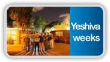

The beit midrash provides the spiritual infrastructure and source of strength for the wide variety of educational activities in Tel Aviv
The garin provides a full, lively and meaningful social life for its members, along with communal activism and service
Preparation for one’s bar mitzva can be one of the most important and formative experiences for a boy this age
Bringing the sounds and activities of normal life into the hospital to keep up patients’ spirits
A program that strengthens the spirit of our IDF soldiers and helps increase their motivation to do meaningful army service
The doors of the beit midrash are open to anyone interested in Jewish content and who wants to meet, study and converse
The girls work with the garin to help bridge gaps between religious and secular residents
The world of tradition and Jewish values connect fellow Jews even in times of death and loss